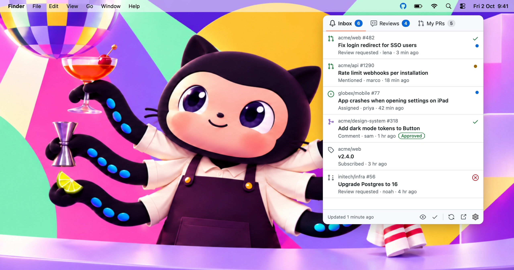

GitHubBar
Your GitHub notifications, pull requests and review requests, one click away in the macOS menu bar. Styled after GitHub's own Primer design system.
- macOS 14 or later
- Apple Silicon & Intel
- Free & open source
- Updates itself

What's on the menu
Every feature, as a merged pull request. Click one to read what it does.
Pinned
Getting started with GitHubBar
0 Open
0 Merged